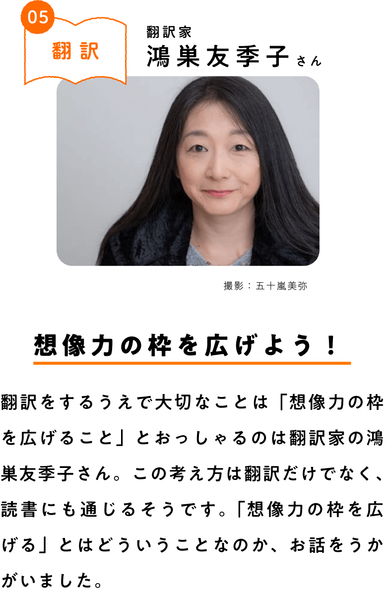
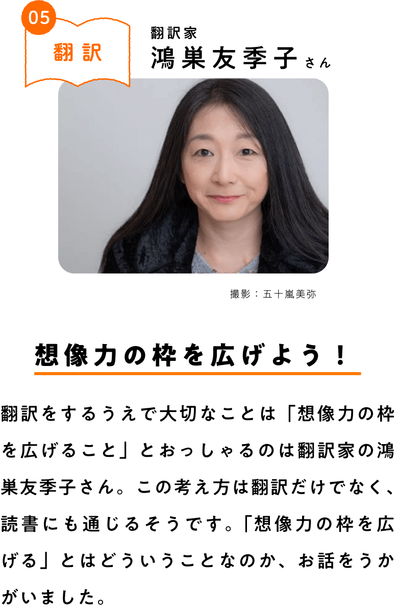
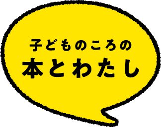

子どものころの私はいわゆる本の虫で、暇さえあれば本を読んでいるような子でした。引っ込み思案な性格だったので、本を開いておけば、それが砦となって自分を守ってくれるような気がしていたのかもしれません。そのときから、翻訳ものは好きでした。思い出すのは、小学四年生くらいから読みはじめた「少女世界文学全集」（偕成社）です。ヘルマン・ヘッセやゲーテ、スタンダールなどの西洋の古典を熱心に読んでいたことを覚えています。そしてそのときに出会った作品のひとつが、のちに私が翻訳をすることになるエミリー・ブロンテの『嵐が丘』です。もちろんそのころは、自分が将来翻訳家になってその作品を訳すことになろうとは思ってもみませんでしたけれど、私にとって大きな出会いでした。
翻訳ものを手にとった方のなかには、ほとんど抵抗を感じずに読み進められる人もいるかもしれません。
しかしいっぽうで、文章に壁を感じたり、読み進めるのがつらくなってしまったりする人も少なくないのではないでしょうか。それもそのはず。海外の作品には、聞きなれない名前や地名、親しみのない習慣などがよく出てきますから、そんなふうに感じてしまうのも無理はありません。最初って違うことのほうが前面に感じられますよね。だから、日常と異なることがたくさん出てくると、どこか不安な気持ちになるのかもしれません。
でも、読書の楽しみって、やっぱり新しいものに出会えることだと私は思います。ちょっと異質で違和感があるもの、ときには苦手かもと思うようなものも読んでみるととても良い経験になりますよ。そのとき、みなさんの想像力はちょっと無理をすることになると思いますが、今回私がお伝えする「想像力の枠を広げる」のに読書はとても有効です。このことを、翻訳の仕事を紹介しながら説明してみたいと思います。
翻訳とは何でしょう？ 一般的に翻訳は、英語などさまざまな言語で書かれた文を日本語などの他の言語になおし表現することを言います。こんなふうに説明されると、翻訳は文章を書く仕事だと思われるかもしれません。
もちろん、翻訳家は最終的には文章を書きます。でもじつは、翻訳家の仕事の八割から九割は読む作業なんですよ。たとえば、私がある海外の作家の本を翻訳することになったら、何よりまず英語の原文を深く読まなければなりません。
どれくらい深く読むかというと、どうしてここにこの単語が出てくるのか、なぜいまこの人物はこの語順で話しているのかなど、原文がもっているあらゆるサインを見落とさないようにします。そうやって、作者や登場人物と対話を重ねていく。良い翻訳をするためには、書くということ以前に、良い読者にならなければいけないのです。
さて、翻訳をする際に私が大切だと思うことがあります。それは、「想像力の枠を広げる」ということです。翻訳というのは、いっとき作者になりきることです。そのためには、自分の想像力をフル回転させながら作業を進めていく必要があります。作者になりきって作品の良さを伝えられるよう、翻訳家の私が想像できることを広げる努力をしないといけないわけですね。
私が翻訳をするときと同じように、他者に思いを馳せることは生きていくうえでとても大切です。でも、ここで陥りがちな落とし穴があります。それは、「自分だったらどうだろう？」とすぐに自分に引きよせて考えてしまうこと。これって、相手の気持ちに立っているように見えますよね。でもじつは、自分の想像力のなかで相手を判断している場合が少なくないんです。
読書の場合も同じことが言えます。みなさんは、「登場人物の気持ちになって考えてみよう」と言われたことがあるかもしれません。もちろん、そのように積極的な姿勢で本を読むのは悪いことではありません。しかし私は、「自分だったら……」と考えてみる前に、その登場人物についていろいろと調べてみてほしいです。
想像力の枠を広げるための第一歩は、何より相手を知ることです。ある登場人物をすぐに自分の考えや人生と関係づけてしまうのではなく、その登場人物はどのような環境で育って、いまどんな状況にあるのかを調べてみる。そうすると、いままで見えていなかったことがいくつも見えてくるはず。つまり、みなさんの想像力の枠が少し広がったわけですね。自分とは異なっていたり、ときには違和感を感じることだってある他者を理解するということは、自分の想像力の枠を広げる努力を精一杯したあとにはじめてできることなんです。
しかしいっぽうで、文章に壁を感じたり、読み進めるのがつらくなってしまったりする人も少なくないのではないでしょうか。それもそのはず。海外の作品には、聞きなれない名前や地名、親しみのない習慣などがよく出てきますから、そんなふうに感じてしまうのも無理はありません。最初って違うことのほうが前面に感じられますよね。だから、日常と異なることがたくさん出てくると、どこか不安な気持ちになるのかもしれません。
でも、読書の楽しみって、やっぱり新しいものに出会えることだと私は思います。ちょっと異質で違和感があるもの、ときには苦手かもと思うようなものも読んでみるととても良い経験になりますよ。そのとき、みなさんの想像力はちょっと無理をすることになると思いますが、今回私がお伝えする「想像力の枠を広げる」のに読書はとても有効です。このことを、翻訳の仕事を紹介しながら説明してみたいと思います。
翻訳とは何でしょう？ 一般的に翻訳は、英語などさまざまな言語で書かれた文を日本語などの他の言語になおし表現することを言います。こんなふうに説明されると、翻訳は文章を書く仕事だと思われるかもしれません。
もちろん、翻訳家は最終的には文章を書きます。でもじつは、翻訳家の仕事の八割から九割は読む作業なんですよ。たとえば、私がある海外の作家の本を翻訳することになったら、何よりまず英語の原文を深く読まなければなりません。
どれくらい深く読むかというと、どうしてここにこの単語が出てくるのか、なぜいまこの人物はこの語順で話しているのかなど、原文がもっているあらゆるサインを見落とさないようにします。そうやって、作者や登場人物と対話を重ねていく。良い翻訳をするためには、書くということ以前に、良い読者にならなければいけないのです。
さて、翻訳をする際に私が大切だと思うことがあります。それは、「想像力の枠を広げる」ということです。翻訳というのは、いっとき作者になりきることです。そのためには、自分の想像力をフル回転させながら作業を進めていく必要があります。作者になりきって作品の良さを伝えられるよう、翻訳家の私が想像できることを広げる努力をしないといけないわけですね。
私が翻訳をするときと同じように、他者に思いを馳せることは生きていくうえでとても大切です。でも、ここで陥りがちな落とし穴があります。それは、「自分だったらどうだろう？」とすぐに自分に引きよせて考えてしまうこと。これって、相手の気持ちに立っているように見えますよね。でもじつは、自分の想像力のなかで相手を判断している場合が少なくないんです。
読書の場合も同じことが言えます。みなさんは、「登場人物の気持ちになって考えてみよう」と言われたことがあるかもしれません。もちろん、そのように積極的な姿勢で本を読むのは悪いことではありません。しかし私は、「自分だったら……」と考えてみる前に、その登場人物についていろいろと調べてみてほしいです。
想像力の枠を広げるための第一歩は、何より相手を知ることです。ある登場人物をすぐに自分の考えや人生と関係づけてしまうのではなく、その登場人物はどのような環境で育って、いまどんな状況にあるのかを調べてみる。そうすると、いままで見えていなかったことがいくつも見えてくるはず。つまり、みなさんの想像力の枠が少し広がったわけですね。自分とは異なっていたり、ときには違和感を感じることだってある他者を理解するということは、自分の想像力の枠を広げる努力を精一杯したあとにはじめてできることなんです。
質問：翻訳する本は、どのように選んでいるのですか。
鴻巣さんの答え：意外に思われるかもしれませんが、私が翻訳するのはその作品が好きだからではありません。また、主人公に共感できるからでもないんです。私が翻訳する作品の主人公は曲者が多くて、『風と共に去りぬ』のスカーレットなんて、正直友だちにはなりたくないなって（笑）。自分の気持ちよりも、その作品を評価できるかどうかで選んでいます。好き嫌いというところを超えた先に理解というものがあると思っています。
質問：作文で言いたいことがあるけど、言葉が出てこないとき、どうすればいいですか。
鴻巣さんの答え：言葉の意味や使い方がわからない場合は辞書を引いてみるのも手ですが、もしかしたら、まだ自分が本当に言いたいことがわかっていないのかも。翻訳も同じなのですが、そういうときはうまく書けないのではなく、うまく読めていない場合がほとんどです。ですので、無理に言葉を探す前にもういちど本をじっくり読んでみて、自分は何を言いたいのかなって考えてみるのが良さそうですよ。
私のおすすめは、まず読んだ本のサマリー（内容や要点をまとめた文章）を書いてみることです。これも、自分に引きよせる前にまずは相手を知ろうという今回のメッセージに通じます。大切なのは、自分がいま登ろうとしている山は、どんな形をしているのかを知ることです。私は良いサマリーが書けるだけでもすばらしい能力だと思いますが、それができたらおのずと自分の言いたいことがクリアになってくるはずです。ぜひ想像力の枠を広げながら、頑張ってみてください。